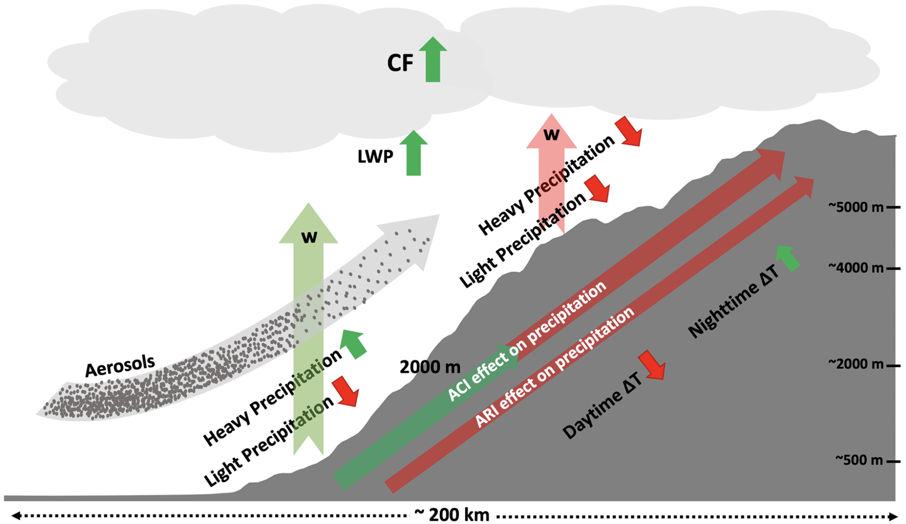

University of Wyoming

My PhD research explored the impacts of atmospheric aerosols (natural and anthropogenic) on precipitation and cloud dynamics over the Himalayas, emphasizing their implications for regional hydroclimate and water resources. Using satellite data, reanalysis datasets, and high-resolution (3 km) WRF-Chem simulations, we examine aerosol effects across daily to interannual scales and specific dust transport events. Results reveal that aerosols enhance cloud vertical development, convection, and precipitation in polluted conditions, significantly altering the precipitation intensity and frequency. It also modulates the freezing level height and can play a role in shifting the snowline upward and reducing the snow-to-rain ratio. Dust aerosols transported from distant sources intensify precipitation and convective processes over the Himalayas. Also, anthropogenic aerosols modulated orographic precipitation differently across elevations, amplifying heavy precipitation below 2000 m but suppressing it above. These findings highlight the critical role of aerosols in shaping the Himalayan hydrology and elevational precipitation patterns, with implications for extreme weather events and water resource management.